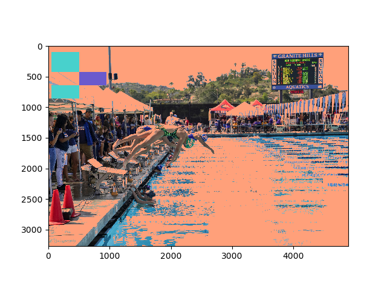

<!doctype html>
	<html lang="en">
	  <head>
	    <meta charset="utf-8">
	    <title>Portfolio</title>
	  </head>
	 <style type="text/css">
	 </style>
	 <body background="images/bluback1.jpg"></body>
    <a href="index.html">Home</a>
    <a href="portfolio.html">Portfolio</a>
    <a href="aboutme.html">About Me</a>
    <h1>This is my portfolio page!</h1>
    <h2>Scratch: Do You Kno De Wae?</h2>
    <h3>An interactive game where the character finds its way through the maze.</h3>
    <a target="_blank" href="https://scratch.mit.edu/projects/203829195/">
    	
    	
    </a>
    <h2>App Inventor: DJ Pad</h2>
    <h3>Tap the DJ music pad to play sounds and beats :)</h3>
    <a target="_blank" href="http://ai2.appinventor.mit.edu/?locale=en#6061241332269056">
    	
    	
    </a>
    <h2>"The First Date"</h2>
    <h3>Interactive fiction: You are given a selection of choices to make on your first date to impress the girl you want to take out.</h3>
    <a target="_blank" href="https://repl.it/@codyhohman/The-First-Date">
        
        
    </a>
    <h2><center>"Python: Tic Tac Toe"</center></h2>
    <h3><center>"A 2 player game where you use an "x" or an "o" to mark your place and try to connect three in a row."</center></h3>
    <a target="_blank" href="tictactoepython.py">
        <center></center>
        <center></center>
    </a>
    <a>
    <h2><center>Image Modification</center></h2>
    <h3><center>The picture on the top is modified through python coding. The resulting picture is on the bottom. This picture was taken at the 2018 Granite Hills Invite for varsity swim.</center></h3>
     <center></center>
     <center></center>
     <center></center>
    </a>
    <h2><center>"Data Graph Project"</center></h2>
    <h3><center>"Using real world data, we made a graph through python to demonstrate rapid change throughout the years of mobile use in the U.S."</center></h3>
     <center></center>
     <center></center>
    
	  </body>
	</html>
